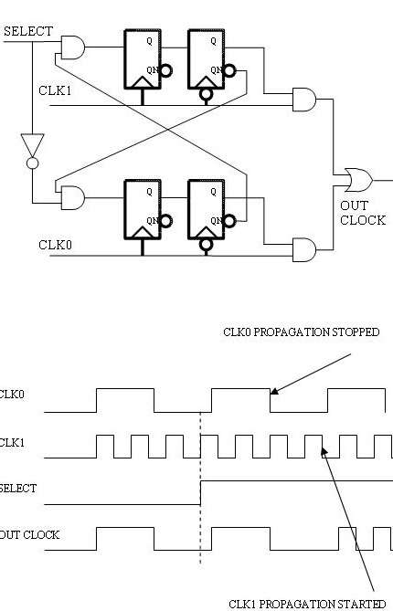

Case Study: Glitch Free Clock Mux
If your design needs to switch from one clock source to another, there is high possibility of harmful clock glitches while switching. Normally you need to stop this clock during the switching process, but what if you design relies on non-stop clock? Here is the circuit proven to work on silicon.
Techniques to make clock switching glitch free

We used it in our 28nm TSMC HPC+ chip, after we carefully simulated it with HSPICE. If possible, make it a hard macro. But if you cannot do that, ask the back-end engineers to
- Hand place them in a isolated area with lots of decap cells surrounding.
- Hand route the signals with shielding
For timing analysis
set_case_analysis 1 CORE/CLK_SEL/sel; # selecting clk1 for this scenario
set_case_analysis 0 CORE/CLK_SEL/DF_SEL_CLK0_D2/Q; # constant after sync
set_case_analysis 1 CORE/CLK_SEL/DF_SEL_CLK0_D2/QN; # constant after sync
set_case_analysis 1 CORE/CLK_SEL/DF_SEL_CLK1_D2/Q; # constant after sync
set_case_analysis 0 CORE/CLK_SEL/DF_SEL_CLK1_D2/QN; # constant after sync
set_dont_touch [get_cells CORE/CLK_SEL]
set_dont_touch [get_nets -of [get_cells CORE/CLK_SEL/*] -segments]